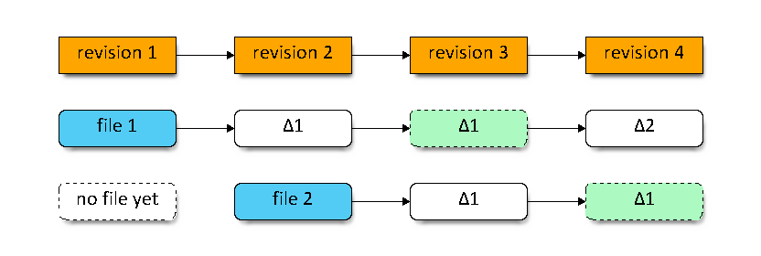
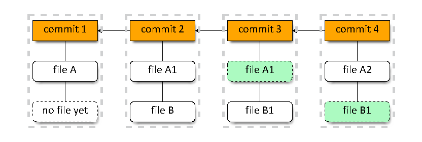
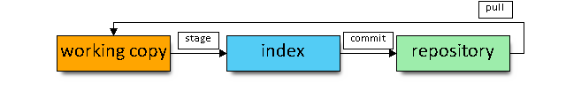

Adam Parchimowicz
- developer for > 7 years
- passionate about new-tech
- java nerd
- fan of cheesy jokes
Facts and myths.
Git / Mercurial - two rival DVCS out there since 2005.
In almost 8 years some facts are already myths.
"Git's CLI sucks!" say Mercurial's power users.
- hard to learn
- harder to master
- exposes unnecessary internal details
- no "native" support on Windows
Git has improved a lot since its early days.
- fantastic well written free book
- not that hard to grasp the concepts*!
- you can use only basic commands
- works great on Windows now
- * still kinda hard to master**
- ** ok, very hard to become a true ninja
Though free Scott Chacon's book (available for free online) is the only thing you need to really learn most of the Git power features. And it is not that long - a free weekend is all that separates you from becoming a Git poweruser.
"Mercurial doesn't give you the power!" say Git's power users.
- history is (too) sacred
- no index
- poor branching model
- user is too limited
In reality, Mercurial has tons of plugins and disabled features.
- MQ gives you index (and more)*
- plugins for rewriting history*
- enableable power features
- power is in simplicity
- * there are so many plugins it is hard to grasp it
- * not out of the box? what about support?
- * finding a plugin to match your needs is an extra effort
Mercurial does have its vices, and so does Git.
Coolest merge ever (according to Linus):
git fetch
GIT_INDEX_FILE=.git/tmp-index git-read-tree FETCH_HEAD
GIT_INDEX_FILE=.git/tmp-index git-checkout-cache -a -u
git-update-cache --add -- (GIT_INDEX_FILE=.git/tmp-index git-ls-files)
cp .git/FETCH_HEAD .git/MERGE_HEAD
git commit
This would merge an unrelated repo into current one
git pull <other repo url> is all you need right now.
The post was from 2005 - very early days
SVN, apart from being centralized, has a couple important characteristics:
- stores changesets in deltas
- poor branching model
- dead simple
Rough representation of SVN and Mercurial storage model

Rough representation of Git storage model

Branching model.
- In SVN branch is just a folder copy
- Git has lightweight local branches and tracking branches
- Mercurial has annotated branches and bookmarks
Merging changes between branches - ever tried this in SVN?
Branch merging in SVN is a nightmare. In Git and Mercurial it just works!
Git - strengths and weaknesses
Git introduces a concept of index (or staging area). It is an extra step, but helps with crafting a commit.

Git offers ultra-fast branching. Branch is just a pointer to a commit.
Creating a branch == writing 41 bytes to a file (40 chars + newline).
Git's repo is a bunch of objects and pointers:
- hean and branch are pointers
- commit is an object that points to it's parents

Git's commit is an object that points to it's tree. This tree itself points to other trees or blobs.

Rewriting history: Git can do it.
- You can ammend last commit.
- Rebase instead of merging.
- Interactive rebase power!
Git's command line is messy. To drop a branch / stash / remote branch you do:
- git branch -d <branch name>
- git stash drop <stash name>
- git push origin :<branch name>